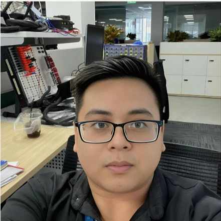

Hien-Long Pham
PhD Researcher in Computer Engineering
I am a first-year PhD researcher at Efficient Neural Computing lab at Kyung Hee University (KHU), supervised by Prof. Sung-Ho Bae. I am recently focused on dataset condensation, generative AI and Vision-Language model (VLM).
Prior to PhD journey, i received my B.E. and M.E. in electronics and telecommunications engineering at HoChiMinh City University of Technology (HCMUT), where i worked with Prof. Vinh Truong Quang on enhancing accuracy of convolutional neural network for object detection task in the complex scenario and deploying efficiently AI models on edge devices.
In parallel with pursuing my BE/ME degrees, I was also Senior Software Engineer at BOSCH Vietnam, where i am involed in software application architecture design for airbag product in the passive safety domain (EA-VN department). My deliveries target on China/EU market with several customer as Seres, Fiat, Zeekr, Li Auto, etc. I fortunately worked with Dr. Thang Nguyen, Phong Pham, Khanh Le, Tu Huynh, and Thinh Truong.

selected publications
-
2026
Personal protective equipment detection using YOLOv8 with improved global attention mechanism and dynamic focus mechanism (Scopus Q1 - SJR: 0.8)
Quang Vinh Truong, Hien Long Pham
Multimedia Tools and Applications, 85, article 664
-
2023
Pedestrian Detection Using YOLO with Improved Attention Module
Truong Quang Vinh, Pham Hien Long
IEEE International Conference on Advanced Computing and Analytics (ACOMPA), pp. 93–98
Professional Experience
PhD Researcher
Software Architect
Research Student
Adward
Fully Funded PhD program, Kyung Hee University, 2027
5 Years Anniversary, BOSCH Vietnam, 2024
Best Performance for GEELY Team, BOSCH Vietnam, 2023
Event Data Recorder development of FIAT Ducato250 MY24 project, BOSCH Vietnam, 2023
Commit and Deliver successfully SW for FIAT Ducato250 MY24 project, BOSCH Vietnam, 2023